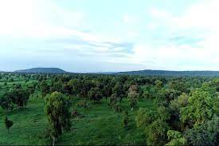
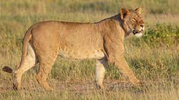

Alatish National Park
Alatish is a newly established national park that is located in Quara woreda of Northern Gondar Zone. It was established in 2006 and derives its name from the Alatish River that has its source in the park and flows in a westerly direction to the Sudan. The park shares its boundaries in the south with Benishangul - Gumuz Regional State, in the west with the Sudan, in the east with Bembaho Kebele, in the northeast with Gelego Kebele and in the north with Mahdid Kebele.
Fauna
In 2016, a lion population was discovered in the protected area that is thought to be of Central African origin. Other animals include leopard, Heuglin's gazelle and reptile and antelopes.
It covers an area of 266,570 ha composed of lowland woodlands. Landscape at Alatish is flat with elevation ranging from 520 to 920 meter above sea level. There are a few hills in the eastern and north-eastern parts of the area. The twin mountains of Amdog are a special feature in the southwestern corner of the park. The soils of Alatish are composed of sand and gravel. Some sections of the area have bedrocks that impede the infiltration of water into the aquifer. These areas provide suitable habitat for seasonal wetlands, which in turn are productive habitats for birds, fish and other wildlife.
Argo-ecologically, the park is classified as dry kola with annual rainfall ranging between 500-1500 mm. The boundaries of the park were defined in 1998 but were redefined with the participation of local communities in 2004. The vegetation of the park is classified as Combretum-Terminalia broad-leaved deciduous woodland. Dominant grass species include Cymbopogon spp., Hyperhenia, filipendula, Echinochloa sp, Pennisetum spp. There are 26 larger mammals (excluding rodents) and 143 recorded bird species. The ornithology of the area requires more investigation, but estimates based on habitat diversity show that there could by anything between 250-400 species of birds representing various status. Alatish is found in an arid and semi-arid ecological zone. It forms an ecotone between the high mountains of the Simen and the Sahel zone in the Sudan. As a result, the biological attributes of the park are believed to be diverse and rich. Alatish also has several historical and cultural assets. Of these, a large Baobab tree at Omedla and the ethnic composition of the area made up of Felata and Gumuz communities are important tourist attractions.
Unique features - This area has recently been set aside as a national park by the Amhara Region. The Park is believed to conserve a major proportion of Sahelian and Sudan-Guinea biome birds and other organisms. It serves as a migratory route for Elephants, which traverse from Dinder National Park in the Sudan. As a result, its role is significant in the formation of a transboundary park between Ethiopia and neighboring Sudan. The various rivers that drain into Sudan from Alatish are important tributaries of the Nile.
